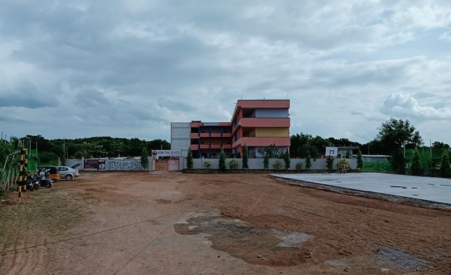
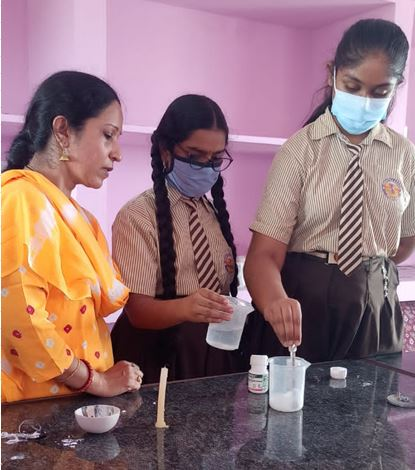
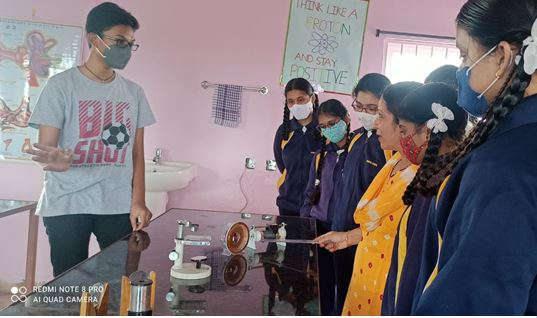
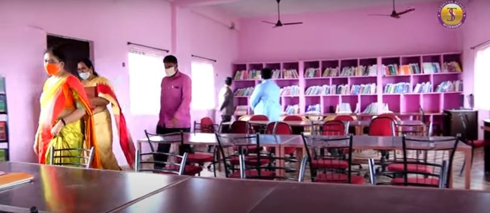
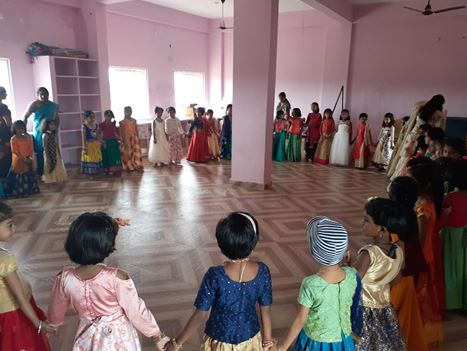
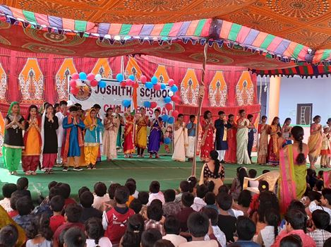
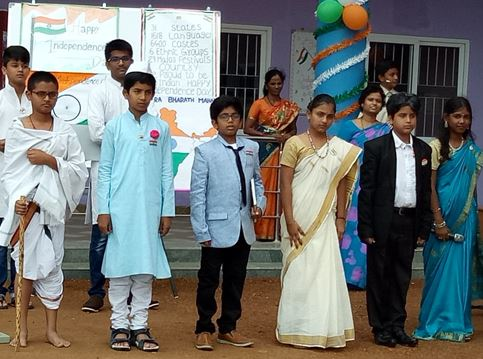
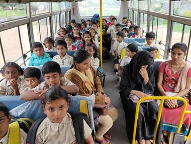

Campus grounds
A two-acre campus with space for learning, sport and outdoor activity.
We currently operate at Janakampet in Hyderabad. Our campus is equipped with state of the art facilities and infrastructure that support the educational program we provide.
Our campus covers two acres. It includes grades from pre-primary till Grade 8. The school has all the required amenities like science laboratories, computer labs, libraries, art and craft room, music room, clinic, Multipurpose hall and staff-rooms in addition to state-of-the-art classrooms. We also have a football field, a basketball court, a 200m running track and a separate playground for our primary school children. The campus also boasts a large variety of sustainably maintained fruit and flowering plants such as papaya, tamarind, bananas, guavas etc.

A two-acre campus with space for learning, sport and outdoor activity.

Practical lessons encourage students to test ideas and learn by doing.
.jpg)
Lab work takes place with support from the school’s educators.
.jpg)
Students build confidence through hands-on, collaborative learning.

Dedicated lab spaces support practical science experiences.

A welcoming space for reading, research and independent discovery.

A flexible venue for school programmes, talks and gatherings.

A stage for students to share their talents with the school community.

School events bring students together to perform and celebrate.

A dedicated room for students who need care during school hours.

Transport service supports students travelling to and from campus.
Since the inception of this institution, Joshitha has ensured that its campus supports and meets the needs of individuals with physical disabilities. The campus has been improved to allow students with physical disabilities to take full advantage of the education, facilities and services provided. In addition, Joshitha supports the education of students with mental disabilities as well. We have Special Needs teachers and facilities to ensure that every child is included and supported in the educational process.
Sports are a positive aid to educational development and imperative for the formation of a sense of self-esteem in an individual. Every student is an ambassador of the true spirit of Joshitha – on and off the field. Our school has sprawling grounds, giving a chance to nurture our students in fresh air and sunshine. We offer various sports under the guidance of experts from respective fields. Year after year our students have excelled in many sport meets and competitions, bringing laurels and glory to our school.
The school has an infirmary for the care of the infirm, sick or injured students who are given first-aid and taken care of. In Infirmary with lots, first aid kit is available to those students who fall sick during school hours till the time the parents take them home.
We have spacious multipurpose area with updated technology where our students display their talents. Many of our programmes, guest lectures and professional development trainings are held in these halls.
Our open-air Auditorium serves as the stage for the many student-run productions and events hosted by the school. The auditorium is equipped with the latest in sound and lighting technology to provide our students with the best platform to showcase their abilities.
At Joshitha, students regularly interact with our fresh, green garden spaces. The free area in school has been efficiently used to plant various crops, including sustainably maintained papaya, tamarind, bananas, guavas and a large variety of flowering plants, allowing students to observe a variety of plants in the same environment. These plants are also neatly tagged with their common name and botanical name, allowing our students to relate what they see with their classroom learning.
Students are also encouraged to actively participate in maintaining our school garden, by allowing them to plant crops, think of innovative ways to plant plants in recyclable material like old tires or plastic bottles, and also encourage their peers and juniors to be more aware of their environment and will them to participate in keeping their school clean and green.
Moreover, green spaces tend to attract various butterflies and birds, allowing our students to observe this ecosystem and stay connected with nature. Having a green environment in school helps keep both our teachers and students to keep a fresh mind and stay active.

The school has a teaching tool that’s known for its creative, imaginative and innovative approach that make learning engrossing, inspiring and interesting. To make learning proactive and interactive, teachers make use of a Technologically advanced version of Digital boards in Classrooms. These interactive teaching sessions help in enabling better focus and attention to what is being taught in the class, making a dry subject interesting.
Equipped with the latest High-end Smartboards we add more life everyday lessons. Built in tools enhance the teaching – learning process. Textbooks and subject digital content are loaded onto the Smartboard so as to be accessible within the classroom. Smartboard technology caters to different learning styles with students demonstrating increased motivation leading to increased participation in class.
The library plays an integral part in the delivery of the curricular program. It provides supporting material for learning in the classrooms and help(s) teach skills required by the students to become literate(intellectual), informed, and able to face the world.
Our library is equipped with more than 2,000 books from different publishers and offering adequate reading space. The use of latest technologies, ensures smooth flow of processes. Our children are given the opportunity to choose from a range of authors, genres and periodicals.
The books in the library cover a wide range of Subjects, from Fiction, Biographies, Encyclopaedias, Science and Crafts. New Journals and books get added regularly to upgrade the present stocks.

Math lab helps the students in terms of learning, interest development, confidence development and subject effectiveness. The Math lab curriculum provides an opportunity for students to discover mathematics through doing. Math teachers allow students take interest to understand mathematical facts practically through model, continue work on the tasks and teachers help as and when they are stuck.
Science is essentially a practical subject which emphasizes on experimental work and learning by doing. Experiments carried in our school laboratories are an integral part of the teaching and learning process of the subject. The students are encouraged to test theories prove concepts and validate hypotheses. It helps students to remember the concepts better.
The school has separate labs for Physics, Chemistry, Biology, and Home Science. The labs are well equipped with the latest equipments, specimens, chemicals / reagents and appliances. It is here that the skills, aptitudes and abilities are sharpened and the students know how to apply practically the knowledge they have gained.
While teaching children the importance of mind power, we train them for the effective use of computers to enhance their performance and to optimize their learning potential. We follow the functional approach in computer training which can enliven the subjects and enable the children to explore the concepts in a virtual environment.
The Campus is well equipped modern computing facilities for more than 30 students and teachers at a time. Our computers are state of the art and include all the necessary software for students to utilize during their classes.
Furthermore, our computers are safe and allow internet access only for educational purposes. In addition, the labs are only used under the strict supervision of a teacher.

Language is a medium of communication. During ASL, the learners are taken through a course wherein listening and speaking are taught as skills in the classroom sessions. To improve the students' use language effectively, expand their vocabulary, and enunciate words, teachers conduct Assessment of Speaking and Listening at regular intervals of time.

Art & Craft classes are conducted by experienced faculty in well designed & spacious room. Through this platform, students gain knowledge to create artistic pieces by exploring their creative imaginations.

Music is a vital part of education here at Joshitha and we ensure that students get an opportunity to play and enjoy all forms of music. Our music room includes instruments that students can play during music classes or club classes. The Music room is used as a place for students to practice and play their preferred instruments. Students who choose to be part of the Music Club may also bring their own instruments. Our instruments include a complete drum kit, keyboards, and guitars (both acoustic and electric), among others.
Our School has provides transport facilities for those that wish to avail them. The buses are safe and comfortable. To ensure safety and punctuality every bus is supervised by a teacher or a bus attendant accompanied by an ayamma. Students may also choose to use their own transport for return and drop.